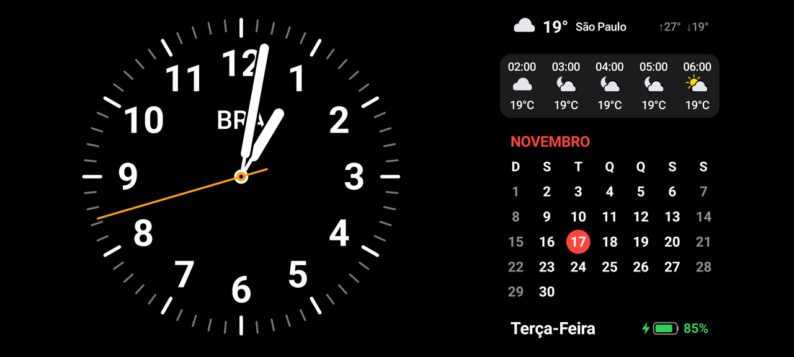
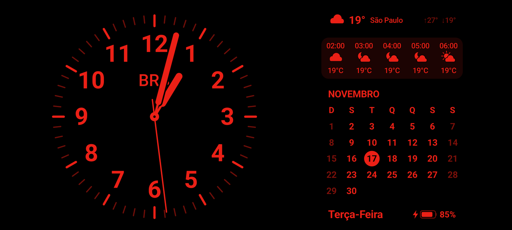
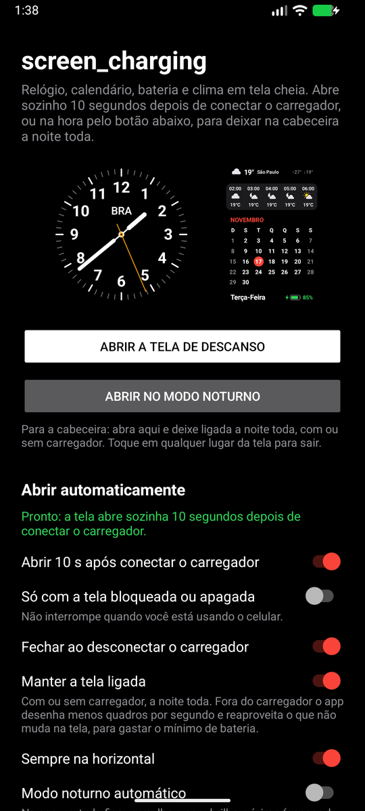
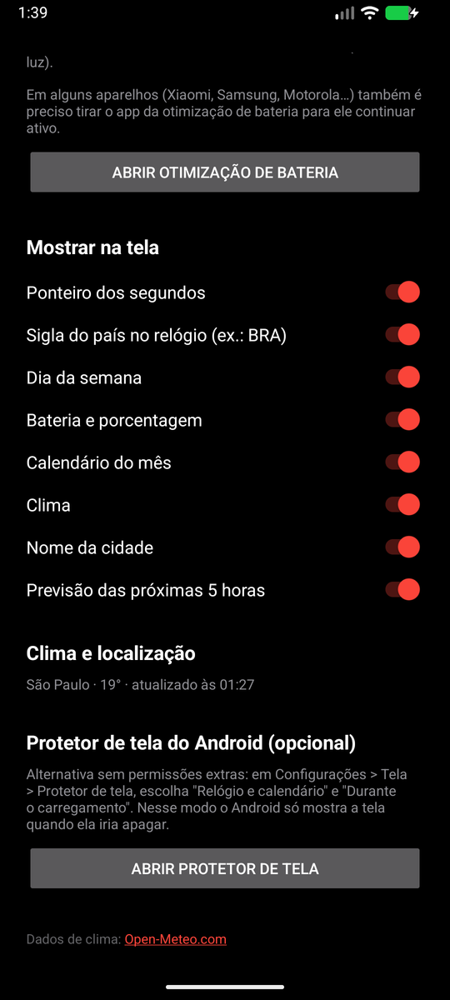

screen_charging — Relógio de Cabeceira para Android
App Android nativo em Kotlin que transforma o celular em um relógio de cabeceira em tela cheia, no estilo do modo de espera do iPhone: relógio analógico, calendário do mês, clima com previsão das próximas horas e nível da bateria. Abre sozinho 10 segundos depois de conectar o carregador, até com o celular bloqueado, ou na hora pelo app, para ficar na cabeceira a noite toda mesmo sem carregador, gastando o mínimo de bateria.
🌙 Visão Geral da Interface

🕰️ Relógio, Clima, Previsão, Calendário e Bateria numa Olhada Só
Relógio analógico com ponteiro de segundos suave à esquerda; à direita, clima atual, previsão das próximas 5 horas (formato 24 h), calendário do mês e dia da semana com a bateria.

🔴 Modo Noturno Automático
No quarto escuro, tudo fica vermelho e o brilho vai ao mínimo, para não ofuscar nem atrapalhar o sono.

⚡ Abre 10 s Após Conectar o Carregador
Serviço em primeiro plano detecta o carregador e abre a tela por cima do bloqueio. Ou toque em “Abrir a tela de descanso” para usar na cabeceira sem carregador.

🎛️ Cada Elemento Liga e Desliga
Ponteiro dos segundos, sigla do país, dia da semana, bateria, calendário, clima, cidade e previsão por hora, com miniatura ao vivo no app.
Principais Funcionalidades
Abertura automática ao carregar:
ChargingMonitorService(serviço em primeiro plano, tipospecialUse) escutaACTION_POWER_CONNECTED, espera 10 segundos e, se o carregador continuar conectado, abre a tela de descanso por cima da tela de bloqueio, acendendo o display.- Fecha sozinha ao desconectar. Um toque também fecha.
- Religado automaticamente após reiniciar o celular ou atualizar o app (
BootReceiver).
Cabeceira a noite toda, até sem carregador:
- Botão “Abrir a tela de descanso” no topo do app; a tela fica ligada a noite inteira com a mesma aparência.
Clima e previsão por hora:
- Integração com a API gratuita do Open-Meteo (clima atual, máx./mín. do dia e as próximas 5 horas) e nome da cidade pelo
Geocoderdo Android. - Localização apenas aproximada, arredondada para cerca de 1 km; atualização a cada 30 minutos com cache local.
- Ícones do tempo vetoriais desenhados em
Canvas, que também ficam vermelhos no modo noturno.
- Integração com a API gratuita do Open-Meteo (clima atual, máx./mín. do dia e as próximas 5 horas) e nome da cidade pelo
Cuidados com a tela OLED: o desenho se desloca alguns pixels a cada minuto, evitando marcas permanentes.
Alternativa sem permissões extras: também funciona como Protetor de tela do Android (
DreamService).
📊 Consumo Medido: Desenhando Só o Que Muda
A parte parada da tela (números, calendário, clima, bateria) fica guardada num Bitmap, refeito só quando algo muda; a cada quadro o app desenha apenas os ponteiros. Na bateria, 20 quadros por segundo em vez de 60, com o ponteiro dos segundos ainda deslizando.
| Uso do processador para desenhar a tela | Versão 1.0.0 | Versão 1.1.0 | Ganho Real |
|---|---|---|---|
| No carregador (60 quadros/s) | 39% de um núcleo | 20% de um núcleo | -49% |
| Na bateria (20 quadros/s) | 39% de um núcleo | 4% de um núcleo | -90% |
| Tamanho do APK | 687 KB | 688 KB | Sem bibliotecas externas |
Medições no emulador do Android. Estimativa para uma noite de 8 h sem carregador: 10–25% da bateria em tela OLED com o modo noturno; 30–50% em tela LCD.
🛠️ Especificações Técnicas
- Linguagem: Kotlin 2.1, somente o framework Android (sem bibliotecas externas)
- Compatibilidade: Android 8 ou mais novo (
minSdk 26,targetSdk 36) - Desenho:
Viewprópria comCanvase camada estática emBitmap - Segundo plano: serviço em primeiro plano
specialUse+ permissão “Sobrepor a outros apps” - Clima: Open-Meteo (CC BY 4.0), sem chave de API
- Distribuição: APK assinado com chave de release, publicado nas Releases do repositório
📂 Estrutura de Arquivos do Projeto
tela_carregamento_android/
├── README.md # Apresentação e documentação completa
├── LICENSE # Licença comercial proprietária
├── app/src/main/
│ ├── AndroidManifest.xml
│ └── java/com/tazzeus/telacarregamento/
│ ├── StandbyView.kt # Relógio, calendário, clima e bateria em Canvas
│ ├── StandbyActivity.kt # Tela cheia por cima do bloqueio
│ ├── ChargingMonitorService.kt # Detecta o carregador e abre após 10 s
│ ├── StandbyDreamService.kt # Protetor de tela do Android
│ ├── WeatherRepository.kt # Localização, Open-Meteo e Geocoder
│ ├── WeatherIconPainter.kt # Ícones do tempo vetoriais
│ ├── AmbientNightMode.kt # Modo noturno pelo sensor de luz
│ ├── Prefs.kt # Opções liga/desliga
│ └── MainActivity.kt # Miniatura ao vivo e configurações
├── docs/screenshots/ # Prints reais do app
└── marketing/
└── screen_charging-Apresentacao.html # Apresentação interativa em página única
🚀 Como Instalar
- Baixe o
screen_charging-v1.1.0.apknas Releases e toque nele para instalar. - Permita a localização (para o clima) e “Sobrepor a outros apps” (para abrir sozinho ao carregar).
- Conecte o carregador: em 10 segundos a tela de descanso aparece. Sem carregador, toque em “Abrir a tela de descanso”.
🔄 Diretrizes de Versionamento Git (Multi-IA)
- Branch
dev: Branch ativa de trabalho para desenvolvimento, novos recursos e documentação. - Branch
main: Branch estável de lançamento. O merge dedevparamainé realizado exclusivamente mediante solicitação explícita do usuário.